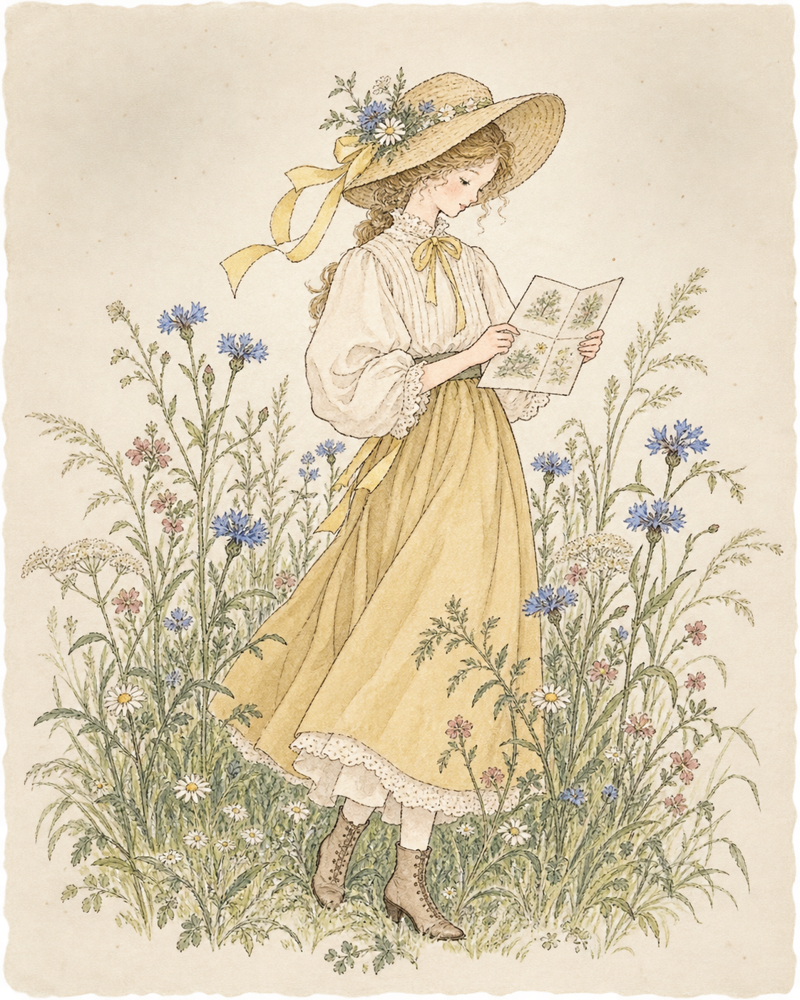

Insight
Listen closely: audience behaviour, comments, culture and context.
Creative planning · Audience insight · Visual storytelling
A film-trained creative planner for brands, culture & people.
Move your cursor through the garden.
DiscoverI’m Xintian, a creative planner whose route into advertising runs through documentary film, social content, IP activations and live experiences.
Ethnographic training taught me to observe before I assume. Production taught me to turn a thought into something tangible. Across entertainment, culture and public media, I have translated audience signals into stories, formats and moments that invite participation.
我擅长从人物观察与用户反馈中提炼洞察，再把洞察转译成可执行的内容、视觉叙事与传播体验。
Listen closely: audience behaviour, comments, culture and context.
Build the idea: concept, copy, scripts, storyboards and visual language.
Make it real: shoots, social formats, IP moments and live touchpoints.

Not a list of tasks—a trail of audience thinking, creative decisions and measurable response.
Original dating show · Creator / Lead camera
Built a female-audience content proposition from insight to screen—designing the format, relationships, shoot and short-form edit strategy.
NetEase · Planning intern
Connected brand tone with young-audience behaviour across a Naraka: Bladepoint offline booth and branded short-form content.
Suzhou Broadcasting System · Intern
Helped turn a digital exhibition into a multi-touchpoint youth activation through a King of Glory character collaboration, cosplay performance, interaction and official merchandise.
Suzhou Broadcasting Converged Media · Intern
Balanced editorial clarity with event operations—interviewing writers, publishing five stories and supporting large cultural programmes.
Queen’s University Chinese Theatre · Vice President / Social
Created a consistent cross-channel voice and converted attention into attendance for student theatre productions.
MA Ethnographic and Documentary Film (Practical)
Research · observation · documentary storytelling · end-to-end productionBA Film & Media · GPA 3.55 / 4.3 · Major GPA 3.86 / 4.3
Dean’s Honour List, three consecutive years